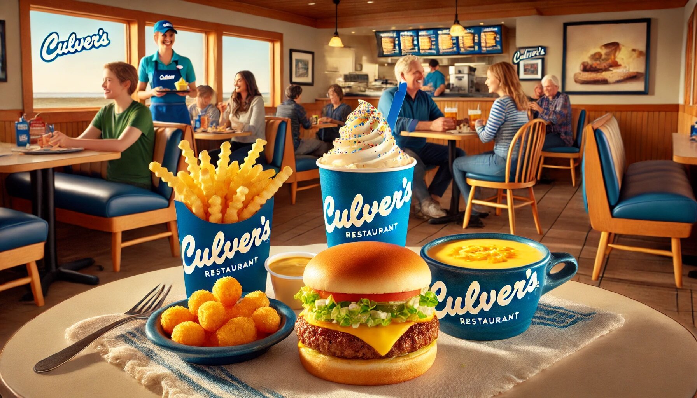

When it comes to comfort food that hits the spot every single time, Culver’s is a name that stands out. Known for its warm hospitality, fresh ingredients, and mouthwatering dishes, Culver’s has become a beloved destination for food lovers across the United States. Whether you’re a first-time visitor or a seasoned fan, there’s always something new and exciting to discover on Culver’s menu. In this article, we’ll take a deep dive into the highlights of Culver’s offerings, celebrating the flavors, variety, and quality that make this restaurant chain a true gem.
Before we dive into the Culver's menu prices, it’s worth mentioning that dining at Culver’s is more than just grabbing a quick bite. It’s an experience. From the moment you walk in, you’re greeted with a friendly smile and the inviting aroma of freshly prepared food. The atmosphere is cozy and welcoming, making it the perfect spot for a family dinner, a casual lunch with friends, or even a solo treat-yourself moment. And while the Culver's menu prices are reasonable, the value you get from the quality and portion sizes is truly unmatched.
Culver’s prides itself on its commitment to quality and hospitality. Their motto, “Welcome to Delicious,” isn’t just a catchy phrase—it’s a promise. Every item on the menu is crafted with care, using fresh, never-frozen ingredients. This dedication to excellence is evident in every bite, making Culver’s a standout in the fast-casual dining scene.
Let’s start with the crown jewel of Culver’s menu: the ButterBurger. If you haven’t tried one yet, you’re in for a treat. The ButterBurger isn’t your average burger—it’s a masterpiece. The name comes from the lightly buttered, toasted bun that adds a rich, savory flavor to every bite. The beef patty is always fresh, never frozen, and cooked to perfection.
What makes the ButterBurger truly special is its simplicity. Culver’s doesn’t rely on over-the-top toppings or gimmicks to make their burgers stand out. Instead, they focus on quality ingredients and expert preparation. Whether you prefer a classic single or a hearty double, the ButterBurger is a must-try. And don’t forget to pair it with one of Culver’s famous sides—more on those later!
No burger is complete without a side of fries, and Culver’s crinkle-cut fries are a fan favorite. These fries are crispy on the outside, fluffy on the inside, and perfectly seasoned. They’re the ideal companion to any meal, whether you’re enjoying a ButterBurger, a chicken sandwich, or a salad.
What sets Culver’s fries apart is their consistency. No matter which location you visit, you can always count on them to be fresh and delicious. And if you’re feeling adventurous, try dipping them in Culver’s signature cheese sauce for an extra indulgent treat.
If there’s one thing Culver’s is famous for (aside from their ButterBurgers), it’s their fresh frozen custard. This creamy, dreamy dessert is the perfect way to end your meal—or, let’s be honest, to start it. Culver’s custard is made fresh daily in every flavor imaginable, from classic vanilla and chocolate to seasonal specialties like pumpkin spice or peppermint.
One of the best things about Culver’s custard is its versatility. You can enjoy it in a cone, a dish, or as part of a decadent concrete mixer. Concrete mixers are Culver’s version of a blended dessert, combining custard with mix-ins like candy, fruit, or cookies. The possibilities are endless, and each combination is a delightful surprise.
For those who prefer poultry over beef, Culver’s has you covered. Their chicken sandwiches and tenders are a crispy, flavorful alternative to the ButterBurger. Made with 100% all-white meat chicken, these items are hand-breaded and cooked to golden perfection.
The chicken sandwich is a standout, featuring a tender, juicy patty topped with your choice of toppings and served on a toasted bun. It’s a satisfying option that rivals any fast-food chicken sandwich out there. And if you’re in the mood for something a little lighter, the chicken tenders are a great choice. They’re perfect for dipping in Culver’s signature sauces, like honey mustard or ranch.
Culver’s isn’t just about indulgent comfort food—they also offer a variety of fresh, flavorful salads for those looking for a lighter option. Each salad is made with crisp greens, vibrant vegetables, and high-quality proteins like grilled chicken or fried chicken tenders.
One of the most popular options is the Cranberry Bacon Bleu Salad, which combines mixed greens, dried cranberries, bacon, and bleu cheese crumbles. It’s a perfect balance of sweet, savory, and tangy flavors. For a more classic choice, the Garden Fresco Salad is a refreshing mix of lettuce, tomatoes, cucumbers, and cheese.
What’s great about Culver’s salads is that they don’t skimp on portion size or flavor. Even if you’re trying to eat healthier, you won’t feel like you’re missing out.
On a chilly day, there’s nothing quite like a bowl of soup or chili to warm you up. Culver’s offers a rotating selection of soups and chili, all made with the same care and attention to detail as the rest of their menu.
The Wisconsin Cheddar Cheese Soup is a fan favorite, featuring a rich, creamy base with chunks of cheddar cheese and vegetables. It’s like a warm hug in a bowl. The chili, on the other hand, is hearty and flavorful, with just the right amount of spice. Both options are perfect for pairing with a sandwich or salad.
No meal at Culver’s is complete without a side or two. In addition to their famous crinkle-cut fries, Culver’s offers a variety of other sides to round out your meal. The cheese curds are a must-try, especially if you’re a fan of squeaky, melty goodness. They’re breaded and fried to perfection, making them an irresistible snack or side.
For something a little different, try the mashed potatoes and gravy. They’re creamy, comforting, and pair perfectly with any main dish. And if you’re in the mood for something green, the coleslaw is a refreshing option with just the right amount of crunch.
Culver’s is a family-friendly restaurant, and their kid’s menu reflects that. Designed with younger diners in mind, the kid’s menu features smaller portions of Culver’s most popular items, like ButterBurgers, chicken tenders, and macaroni and cheese.
What’s great about the kid’s menu is that it doesn’t sacrifice quality. Even the little ones get to enjoy the same fresh, delicious ingredients as the adults. And of course, no kid’s meal is complete without a scoop of fresh frozen custard for dessert.
One of the things that keeps Culver’s fans coming back is their rotating selection of seasonal specials. Throughout the year, Culver’s introduces limited-time offerings that celebrate the flavors of the season.
In the fall, you might find a pumpkin spice concrete mixer or a savory pot roast sandwich. During the summer, refreshing options like a strawberry salad or a lemon ice concrete mixer take center stage. These specials are a fun way to mix things up and try something new.
Beyond the food, Culver’s is also known for its commitment to giving back to the community. The company regularly partners with local organizations and schools to support charitable causes. This dedication to making a positive impact adds another layer of warmth to the Culver’s experience.
Culver’s is more than just a restaurant—it’s a destination for delicious, high-quality food that brings people together. From the iconic ButterBurger to the fresh frozen custard, every item on the menu is crafted with care and attention to detail. The variety of options ensures that there’s something for everyone, whether you’re in the mood for a hearty meal or a light snack.
What truly sets Culver’s apart, though, is the experience. The friendly staff, cozy atmosphere, and commitment to quality make every visit feel special. So the next time you’re craving comfort food with a side of hospitality, head to Culver’s. Your taste buds will thank you.
And remember, life’s too short to skip dessert—so go ahead and order that concrete mixer. You deserve it!